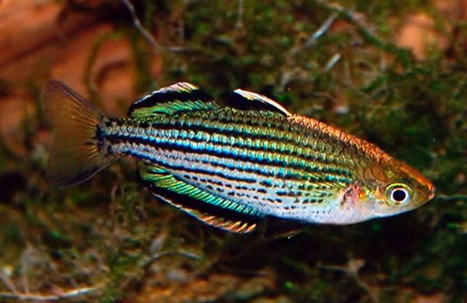

Systématique
- Ordre : Atheriniformes
- Famille : Melanotaeniidae
- Genre : Melanotaenia
- Espèce : M. maccullochi
- Auteur : Ogilby, 1915

Melanotaenia maccullochi est l'une des plus petites espèces de la famille des poissons-arc-en-ciel. Elle présente un corps relativement court et comprimé latéralement. Sa coloration est argentée avec environ sept bandes longitudinales brunes ou rougeâtres qui parcourent les flancs. Une tache operculaire rouge orangé est généralement visible.
Le mâle atteint environ 6 à 7 cm, tandis que la femelle reste légèrement plus petite, autour de 5 à 6 cm. Il existe plusieurs formes géographiques (variétés), dont les plus connues sont celles de la rivière Jardine et d'Etty Bay, qui affichent des nageoires dorsale et anale bordées de rouge ou de jaune. C'est une espèce robuste, idéale pour débuter avec les mélanotaeniidés.
C'est un poisson grégaire, vif et pacifique qui doit être maintenu en groupe (minimum 6 à 8 individus). Melanotaenia maccullochi occupe principalement le milieu et le haut de l'aquarium. Les mâles peuvent se livrer à des parades d'intimidation sans agressivité réelle, déployant leurs nageoires pour séduire les femelles.
En aquarium, il nécessite un espace de nage dégagé au centre, tout en appréciant une végétation dense sur les côtés et l'arrière-plan. C'est un poisson actif qui apprécie un éclairage mettant en valeur ses reflets métalliques.
Mode : ovipare, diffuseur d'œufs sur support végétal.
Le frai est quotidien en aquarium si les conditions sont favorables. Le mâle courtise la femelle en nageant à ses côtés vers un support de ponte (mousses de Java, plantes à feuilles fines ou mops). La femelle dépose quelques œufs adhésifs chaque jour pendant plusieurs jours.
L'éclosion intervient après 5 à 10 jours selon la température. Les alevins sont très petits et nagent directement sous la surface de l'eau. Ils doivent être nourris avec des infusoires ou de la nourriture liquide très fine, puis avec des nauplies d'artémias dès qu'ils sont assez grands. Les parents ne s'occupent pas des œufs et peuvent les dévorer s'ils ne sont pas retirés.
Dimorphisme sexuel : marqué chez les individus matures. Les mâles sont plus colorés, ont un corps plus haut et des nageoires plus pointues. La femelle est plus terne, plus svelte et présente des nageoires plus courtes.
Espérance de vie : environ 3 à 5 ans en aquarium.
On trouve cette espèce dans le nord de l'Australie (péninsule du Cap York) et dans le sud de la Papouasie-Nouvelle-Guinée. Elle fréquente les eaux calmes ou à courant lent : marécages, lagunes, et petits ruisseaux souvent riches en végétation aquatique et encombrés de racines ou de feuilles mortes. Les eaux peuvent être claires ou légèrement ambrées par les tanins.
Répartition

Origine naturelle :
- Australie : Nord du Queensland (Cap York).
- Papouasie-Nouvelle-Guinée : Région du fly river.
- Localité type : Barron River, Queensland, Australie.
Paramètres de maintenance
Température : 22 à 28 °C.
pH : 6,5 à 8,0.
GH : 5 à 15 °dGH.
Courant : modéré.
Volume conseillé : minimum 80 à 100 litres pour un petit banc.
Régime alimentaire
Régime : omnivore.
En aquarium, il accepte volontiers les paillettes et granulés. Pour une santé optimale et de meilleures couleurs, il est important de varier avec des nourritures vivantes ou congelées (artémias, daphnies, vers de vase, larves de moustiques).